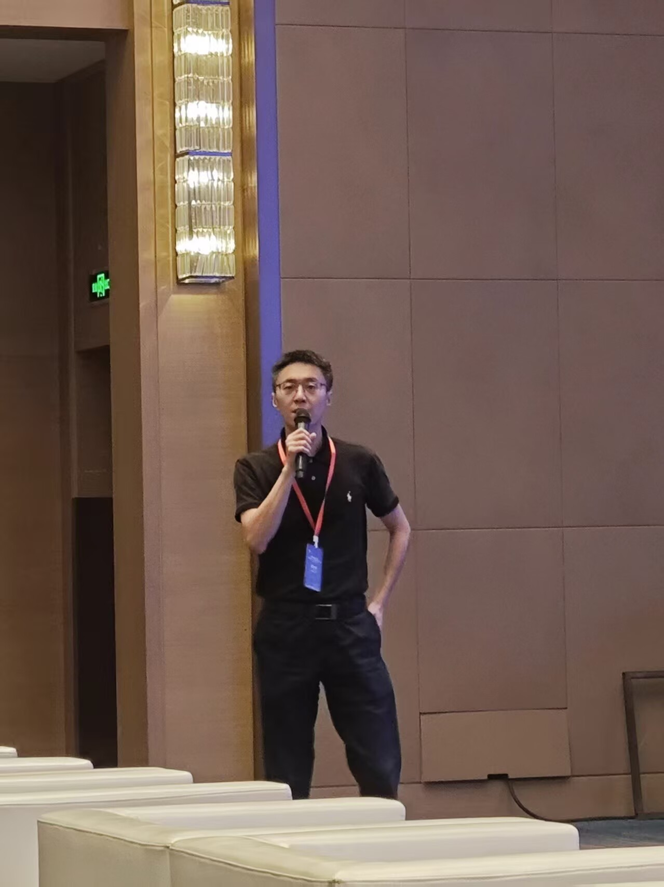

Changliang Zou邹长亮
Professor
School of Statistics and Data Sciences
Nankai University
- Office
- Room 344, Fansun Building
Nankai University, Tianjin, 300071

Short Bio
I obtained B.S, M.S, and Ph.D. in Statistics, from School of Mathematical Sciences, Nankai University, in 2003, 2006, and 2008, respectively. I joined Nankai University, in June, 2009.
Research Interests
Predictive Inference; Change-Point and Outlier Detection; Machine Learning
Teaching
Advanced Statistics I、II (PG); Introduction to Data Science (UG)
Selected Recent Publications
Full list on Google Scholar
Refereed journal papers
- “Unified conformalized multiple testing with full data efficiency”, JRSSB, accepted.
- “Optimal model selection for conformalized robust optimization”, JASA, accepted.
- “Aggregating conformal prediction sets via alpha-allocation”, Biometrika, accepted.
- “Enhanced localized conformal prediction with imperfect auxiliary information”, JASA, accepted.
- “ART: Distribution-free and model-agnostic changepoint detection with finite-sample guarantees”, JRSSB, accepted.
- “Feedback-enhanced online multiple testing with applications to conformal selection”, JMLR, 27(186), 1–86, 2026.
- “Cap: A general algorithm for online selective conformal prediction with fcr control”, JMLR, 26 (287), 1–74, 2025.
- “Reliever: relieving the burden of costly model fits for changepoint detection”, JMLR, 26 (203), 1–57, 2025.
- “Online multiple changepoint detection with false discovery rate control”, IEEE Tran. Inform. Theory, 72, 8697–8722, 2025.
- “Semi-supervised distribution learning”, Biometrika, 112, asae056, 2025.
- “Model-free statistical inference on high-dimensional data”, JASA, 120, 186–197, 2025.
- “Optimal subsampling via predictive inference”, JASA, 119, 2844–2856, 2024.
- “Robust estimation of high-dimensional linear regression with changepoints”, IEEE Tran. Inform. Theory, 70, 7297–7319, 2024.
- “Low-rank matrix estimation in the presence of change-points”, JMLR, 25 (220), 1–71, 2024.
- “Selective conformal inference with FCR control”, Biometrika, 111, 727–742, 2024.
- “Large-scale two-sample comparison of support sets”, JASA, 119, 1604–1618, 2024.
- “Robust high-dimensional low-rank matrix estimation: optimal rate and data-adaptive tuning”, JMLR, 24 (350), 1–57, 2023.
- “Threshold selection in feature screening for error rate control”, JASA, 118, 1773–1785, 2023.
- “Data-driven selection of the number of change-points via error rate control”, JASA, 118, 1415–1428, 2023.
- “False discovery rate control under general dependence by symmetrized data aggregation”, JASA, 118, 607–621, 2023.
- “Large-Scale datastreams surveillance via pattern-oriented-sampling”, JASA, 117, 794–808, 2022.
- “Estimation of low rank high dimensional multivariate linear models for multi-response Data”, JASA, 117, 693–703, 2022.
Refereed conference papers
- “Learning U-statistics with active inference”, ICML, 2026.
- “Stable localized conformal prediction via transduction”, ICML, 2026.
- “Generalized boundary FDR control under arbitrary dependence: an approach on closure principle”, ICML, 2026.
- “Conformal robustness control: a new strategy for robust decision”, ICLR, 2026 (Oral).
- “Distribution-informed online conformal prediction”, ICLR, 2026.
- “Personalized federated conformal prediction with localization”, NeurIPS, 2025.
- “Enhancing deep batch active learning for regression with imperfect data guided selection”, NeurIPS, 2025.
- “Conformal prediction with cellwise outliers: A detect-then-impute approach”, ICML, 2025.
- “e-GAI: e-value-based generalized α-investing for online false discovery rate control”, ICML, 2025.
- “Conditional testing based on localized conformal p-values”, ICLR, 2025.
- “Error-quantified conformal inference for time series”, ICLR, 2025.
- “LoCA: Location-aware cosine adaptation for parameter-efficient fine tuning”, ICLR, 2025.
- “Zipper: Addressing degeneracy in algorithm-agnostic inference”, NeurIPS, 2024 (Spotlight).
- “Conformalized multiple testing after data-dependent selection”, NeurIPS, 2024.
- “Real-time selection under general constraints via predictive inference”, NeurIPS, 2024.
- “Robust group and simultaneous inferences for high-dimensional single index model”, NeurIPS, 2024.
- “ByMI: Byzantine machine identification with false discovery rate control”, ICML, 2024.
- “Uncertainty quantification for data-driven change-point learning via cross-validation”, AAAI, 2024.
- “AutoMS: Automatic model selection for novelty detection with error rate control”, NeurIPS, 2022.